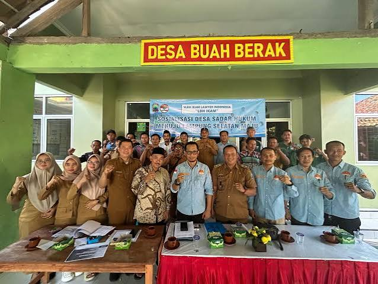

Pemerintah Desa
BUAH BERAK
Kec. Kalianda · Kab. Lampung Selatan

Membangun Desa Buah Berak yang mandiri, sejahtera dan berkarakter melalui seluruh kerjasama masyarakat serta pelaksanaan pembangunan yang berkesinambungan demi kesejahteraan bersama.
Pelajari lebih jauh tentang Desa Buah Berak melalui halaman-halaman berikut.
Sejarah, letak geografis, dan data umum Desa Buah Berak.
Susunan aparatur dan struktur organisasi Pemerintah Desa.
Kabar terbaru kegiatan dan pengumuman resmi desa.
Daftar surat dan layanan yang bisa diajukan warga.